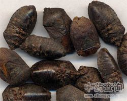

九香虫

拼音
Jiǔ Xiānɡ Chónɡ
别名
屁巴虫、打屁虫
来源
本品为蝽科昆虫九香虫Aspongopus chinensis Dallas 的干燥体。11月至次年3 月前捕捉。置适宜容器内，用酒少许将其闷死，取出阴干；或置沸水中烫死，取出，干燥。
生境分布
此虫以成虫越冬，隐藏于石隙间。分布于安徽、江苏、浙江、江西、福建、台湾、湖北、湖南、广西、广东、四川、云南、贵州等省。
药材特点
全体椭圆形而扁，长1.7～2.2厘米，宽1.0～1.2厘米。体紫黑色，带铜色光泽。头小略呈三角形，黑色，背部有膜质半透明的翅两对，棕色或棕褐色。触角黑色5节，第1节较粗，圆筒形，长度约为第2节之半，其余4节较细长而扁，第2节长于第3节，2、3节长度比例约为4：3到5：3之间，为本种的一个重要特征。腹部有环节，足3对，褐色，以后足最长。
性状
本品略呈六角状扁椭圆形，长1.6～2cm，宽约1cm。表面棕褐色或棕黑色，略有光泽。头部小，与胸部略呈三角形，复眼突出，卵圆状，单眼1对，触角1对各5节，多已脱落。背部有翅2对，外面的1对基部较硬，内部1对为膜质，透明；胸部有足3对，多已脱落。腹部棕红色至棕黑色，每节近边缘处有突起的小点。质脆，折断后腹内有浅棕色的内含物。气特异，味微咸。
性味
咸，温。
功能主治
理气止痛，温中助阳。用于胃寒胀痛，肝胃气痛，肾虚阳痿，腰膝酸痛。
用法用量
3～9g。
化学成分
含脂肪，蛋白质及甲壳质等。
药理作用
1：抑菌试验：九香虫对金黄色葡萄球菌、伤寒杆菌、甲型副伤寒杆菌及福氏痢疾杆菌均具有较强的抗菌作用
摘录
《中国药典》